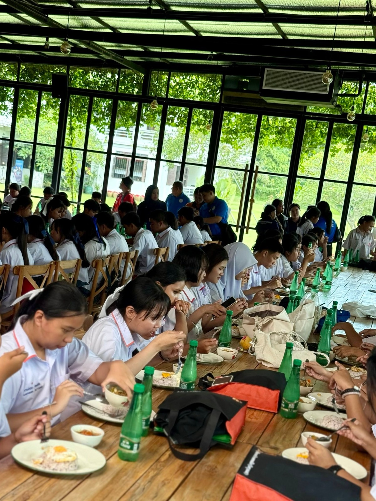
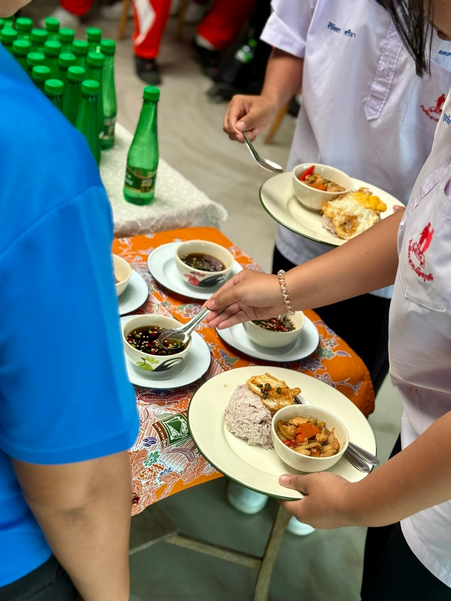
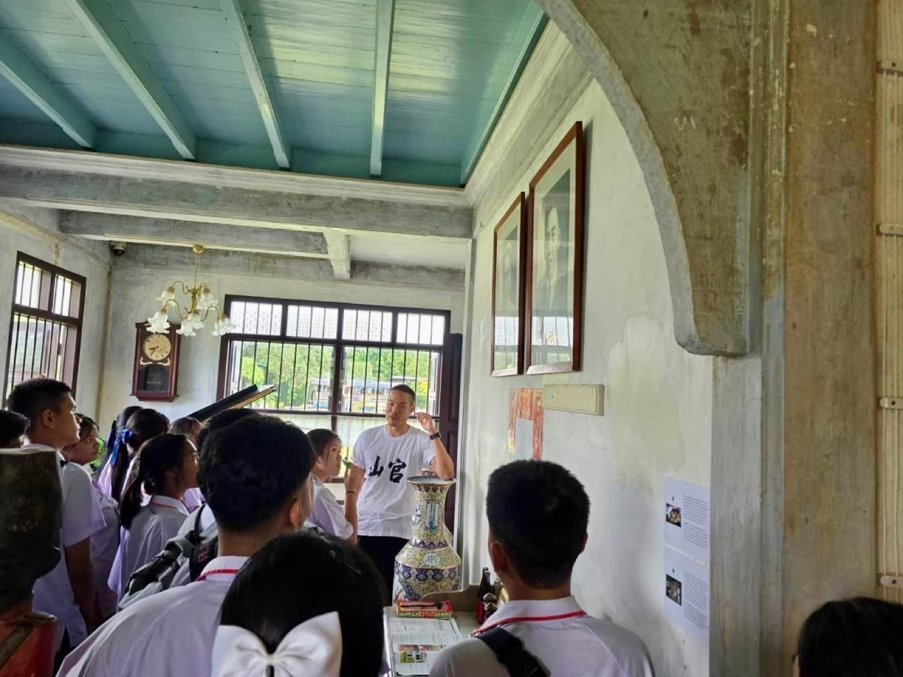
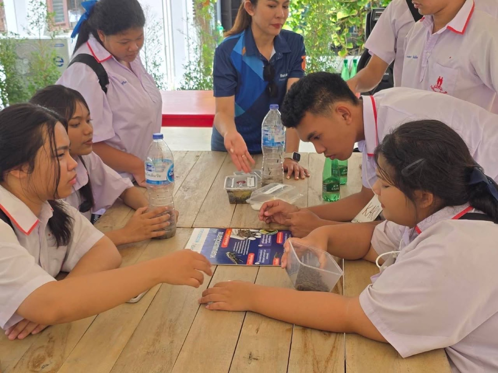

2025 · role · event
Baan Ar-Jor hosts an environmental youth-volunteer training for 130 students




Original text in Thai
บ้านอาจ้อ x อบจ ภูเก็ต x HomeGuard Solarcell x โรตารีเหมืองแร่ x ราชภัฏภูเก็ต x ThaiBev 😇❤️
โครงการอบรมเครือข่ายยุวชนอาสาสมัครพิทักษ์ทรัพยากรธรรมชาติและสิ่งแวดล้อมจังหวัดภูเก็ต เมื่อวันที่ 23/7/25 น้องนักเรียน 130 คน และ จนท 20 คน มากันเต็มมมบ้าน ❤️
รอบถัดไป ชั้นประถมวันที่ 31/7/25 มากัน 150 เหมือนเดิม แต่น่าจะจับปูใส่กระด้งกันหนุกหรอยแระ 🤣
แต่ตอนจบตั่วโก๊ต้องแอบไปนอนสลบชั่วโมงนึง ไม่น่าจะเหนื่อยเพราะเด็ก แต่น่าจะเพราะไปตามหาสะใภ้ที่ zippin จนตี 1 แฮงคคค์ 🤣
#longdaengPhuket 🧧
#tohdaengPhuket 🧧
#บ้านอาจ้อ ❤️